Class 12. GLMs in Decision Contexts Continued
- Supplemental background reading for next class(es): Conroy and Peterson Chapter 5.
- Assignment due: None
- Group work: Submit a concise summary of your proposed problem by 5 pm Friday. Email to me: michael.colvin@msstate.edu, only 1 per group needed.
- Link to class recording Pending
- Today’s R script Class-12.R
Objectives
By the end of this tutorial you should be able to:
- Understand generalized linear models (GLMs)
- Understand logit and expit link functions
- Predicting outcomes from GLMs
- Using analysis in decision contexts
Some preliminaries
- If you want to play along in class download this zipfile *.zip.
- Be sure to unzip it before trying to use files and such
- The file contains the dataset used in class and an R script of all the code.
- Once you have it where you want open the R script and be sure to check the working directory
getwd()and make sure it is where your folder is. - If your working directory is not correct, you can set it in Rstudio: “Session –> Set Working Directory –> To source file location”. Or you can use the
setwd()in the console.
dat<- read.csv("transport-mortality-data.csv")Take a look at the first couple of rows again and get a feel for what we are looking at.
head(dat)## temperature truck n_translocated n_survived
## 1 7.3 truck 2 442 140
## 2 9.0 truck 2 587 163
## 3 9.5 truck 2 410 114
## 4 3.3 truck 2 578 159
## 5 4.6 truck 1 461 127
## 6 5.2 truck 2 287 73OK, looks like it did last class, that is good. Recall we need to calculate the number of mortalities for the GLM to work correctly. That is done below.
dat$n_mortalities<- dat$n_translocated-dat$n_survivedNow we can fit the model assuming the data has a binomial distribution. Recall the prediction model was:
\[\text{logit}(p) = \beta_{0}+ \beta_{1}\cdot\text{Temperature}+ \beta_{2}\cdot\text{Truck}+ \beta_{3}\cdot\text{Temperature}\cdot\text{Truck}\]
where
- \(\beta_{0}\) is the intercept of the linear model
- \(\beta_{1}\) is the effect of temperature
- \(\beta_{2}\) is the effect of truck
- \(\beta_{3}\) is the interaction of temperature and truck, and
- \(p\) is the predicted survival
And the statistical model linking the observed data to the linear model was:
\[\text{Number Survived}\sim Binomial(\text{Number Translocated},p)\]
where,
- \(\text{Number Survived}\) is the number of critters surviving translocation
- \(\text{Number Translocated}\) is the number of critters translocated
- \(p\) is the probability of success (i.e., survival)
fit<-glm(cbind(n_survived,n_mortalities)~temperature+truck+temperature:truck,
data=dat, family="binomial")We left off in the last class with using the rbinom() function to simulate many realizations of the binomial distribution given a number of critters to translocate and the probability of surviving. We made a new object combos using the expand.grid() function to generate all possible combinations of temperature, number of critters to translocate, and which truck. That code is below.
combos<- expand.grid(
temperature=c(8,10,12,14),
ntranslocate=c(100,250,500,1000),
truck=c("truck 1","truck 2"))
head(combos) # look at the combos## temperature ntranslocate truck
## 1 8 100 truck 1
## 2 10 100 truck 1
## 3 12 100 truck 1
## 4 14 100 truck 1
## 5 8 250 truck 1
## 6 10 250 truck 1Recall we used thepredict() function to make predictions from the fitted model and we specific that that type="response" and not type="link" because we want the actual probabilities and not the log odds (i.e., logit). Also recall that we could not get prediction intervals using the predict() function for a glm() but as we saw last time the we can pretty closely approximate it by simply simulating from the distribution. If we really really wanted to we could bootstrap it but that would take some time! The code below fits the glm() to the data assuming the data is binomially distributed.
combos$S<- predict(fit, # predict survival for each input combination
newdata=combos,
type="response")Now that we have the predicted survival we can simulate the expected outcomes for each combination. In this example the outcomes are the number of critters that survive the translocation. Now, we had 32 possible combinations to evaluate and as you recall we need to generate many values from rbinom() to begin to approximate the true distribution. Fortunately computers are good at this type of things so let’s give it a go.
First we need an object to hold all our values. A matrix will work well because I can preallocate it and fill it with 0s. Let’s do 10,000 replicates for each combo, so we will need a matrix with 32 and 10,000 columns to hold each replicate! The rows in the matrix correspond to each row in the combos data.frame().
Let’s make that matrix.
nsims<- 10000
outcomes<- matrix(0, # fill with 0s
nrow=nrow(combos), # number of rows
ncol=nsims) # number of columnsNow that we have it made we can fill each row with replicate draws from the binomial distribution given how many critters we want to translocate and the predicted survival. We are going to use the for for() function to loop over each row of combos and extract the predicted survival and number of critters to translocate to use as inputs to rbinom().
for(i in 1:nrow(combos))
{
S<- combos$S[i]
Nt<- combos$ntranslocate[i]
outcomes[i,]<-rbinom(nsims,Nt, S)
}Now that is done we can look at the outcomes using hist. Below are the expectations for the 32nd combination.
hist(outcomes[32,]) 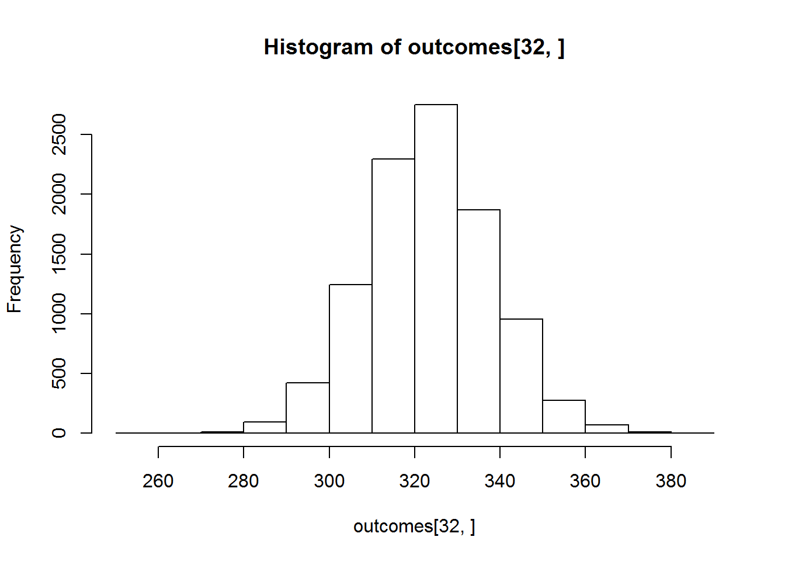
And we can calculate the probability of each outcome.
table(outcomes[32,])/nsims##
## 266 274 275 276 277 278 279 280 281 282
## 0.0001 0.0001 0.0001 0.0001 0.0002 0.0004 0.0003 0.0001 0.0005 0.0002
## 283 284 285 286 287 288 289 290 291 292
## 0.0002 0.0006 0.0009 0.0015 0.0008 0.0024 0.0015 0.0021 0.0023 0.0027
## 293 294 295 296 297 298 299 300 301 302
## 0.0020 0.0039 0.0039 0.0049 0.0057 0.0069 0.0071 0.0083 0.0087 0.0111
## 303 304 305 306 307 308 309 310 311 312
## 0.0108 0.0098 0.0117 0.0133 0.0155 0.0159 0.0153 0.0183 0.0185 0.0211
## 313 314 315 316 317 318 319 320 321 322
## 0.0198 0.0223 0.0211 0.0227 0.0235 0.0267 0.0277 0.0255 0.0259 0.0271
## 323 324 325 326 327 328 329 330 331 332
## 0.0287 0.0261 0.0253 0.0261 0.0239 0.0266 0.0268 0.0242 0.0207 0.0218
## 333 334 335 336 337 338 339 340 341 342
## 0.0229 0.0209 0.0214 0.0175 0.0179 0.0145 0.0172 0.0161 0.0145 0.0110
## 343 344 345 346 347 348 349 350 351 352
## 0.0115 0.0095 0.0092 0.0084 0.0078 0.0053 0.0072 0.0051 0.0068 0.0055
## 353 354 355 356 357 358 359 360 361 362
## 0.0036 0.0038 0.0026 0.0026 0.0019 0.0016 0.0019 0.0013 0.0010 0.0018
## 363 364 365 366 367 368 369 371 372 373
## 0.0010 0.0010 0.0009 0.0006 0.0001 0.0005 0.0001 0.0005 0.0002 0.0001
## 374 375 376 383
## 0.0001 0.0001 0.0001 0.0001Now, there are quite a few possible outcomes. The number of survivors varies from 9 to 384. If we put that together as a decision tree, it would start with 32 branches and have an additional 375 outcomes for each of those branches. Take it from me, it will be a big tree! If you are bored, make that tree and hang it on your fridge.
A decision model
Fortunately a tool like Netica and help out here. We take the predictive model and statistical model an implement them in Netica to develop a formal decision making process. In this context we might be interest in which truck to use to translocate our critters so we maximize survival. This model looks like the image below.
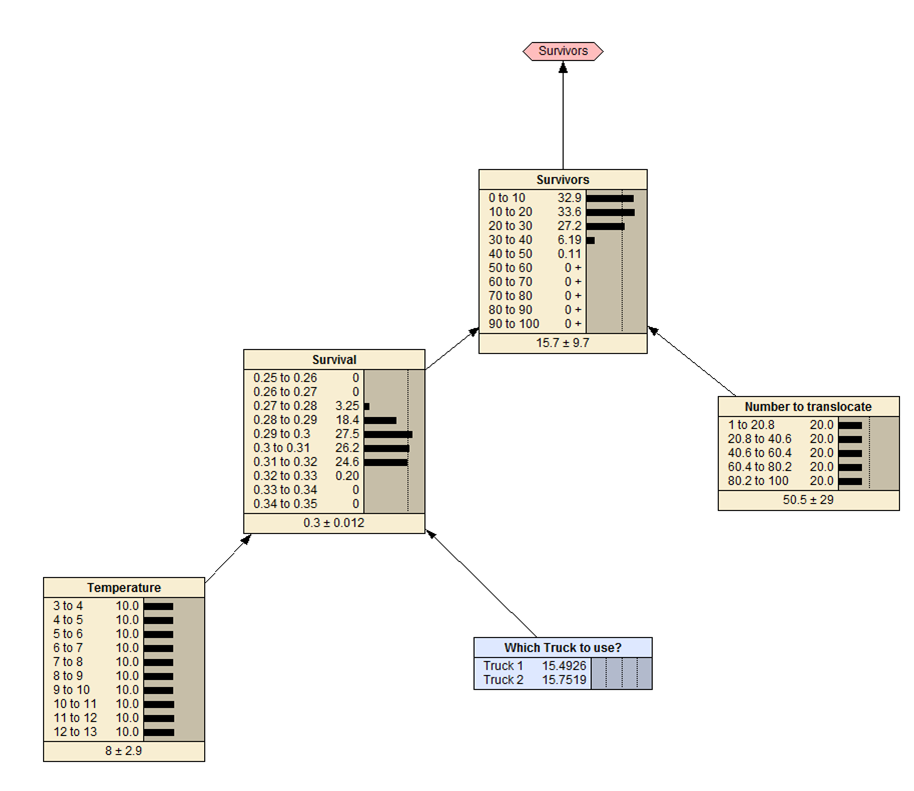
There is a whole lot being consolidated into 4 nature notes! Let’s dig a bit deeper into this. The part of the model below highlights the predictive model. Recall it was
\[\text{logit}(p) = \beta_{0}+ \beta_{1}\cdot\text{Temperature}+ \beta_{2}\cdot\text{Truck}+ \beta_{3}\cdot\text{Temperature}\cdot\text{Truck}\]
where
- \(\beta_{0}\) is the intercept of the linear model
- \(\beta_{1}\) is the effect of temperature
- \(\beta_{2}\) is the effect of truck
- \(\beta_{3}\) is the interaction of temperature and truck, and
- \(p\) is the predicted survival
The BDN below shows the inputs temperature and truck as predicting survival.
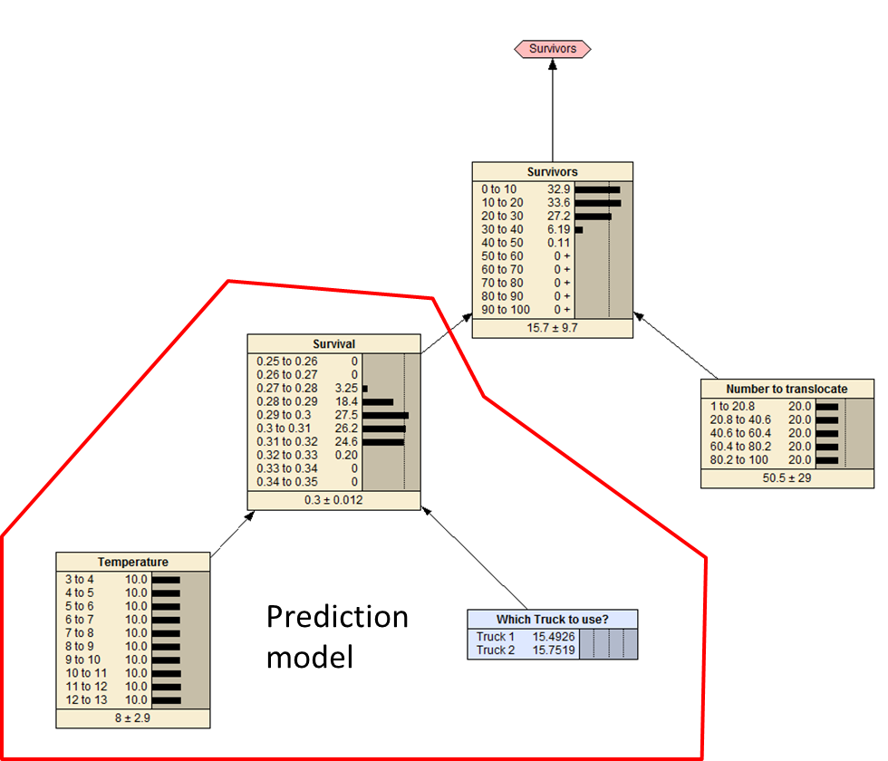
But I don’t see where the \(\beta\)s are? I mean I fit the model and all, so how are they used to predict survival? Well that is because I was able to specify the equation in Netica, it is not pretty but it is pretty doable if you do it in chunks.
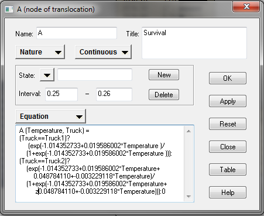
The dialog box specifies what survival is depending on temperature and what truck is used!
In the figure below we have that statistical model highlighted. Recall it was \[\text{Number Survived}\sim Binomial(\text{Number Translocated},p)\]
where,
- \(\text{Number Survived}\) is the number of critters surviving translocation
- \(\text{Number Translocated}\) is the number of critters translocated
- \(p\) is the probability of success (i.e., survival)
Well that seems to jive with the inputs below! Cool beans.
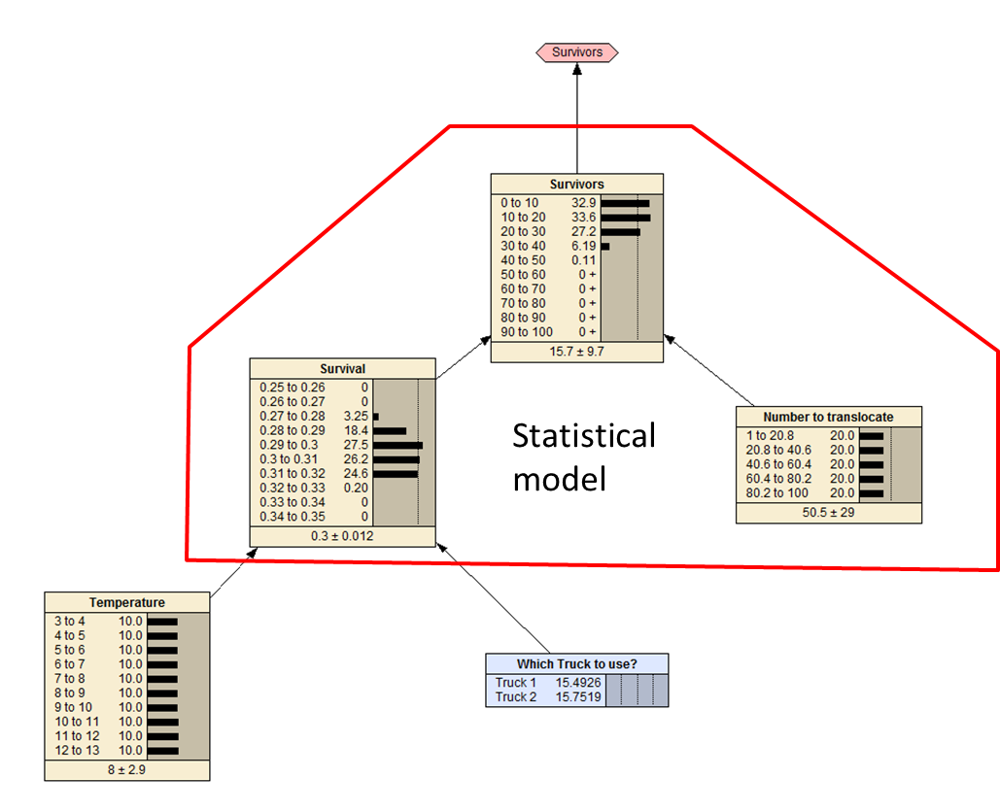
Just like with survival there is an equation that calculates the probability of the outcomes, number surviving, given survival and the number of critters to translocate.
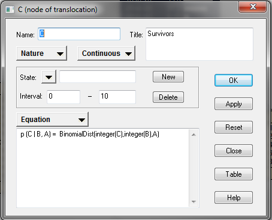
Hopefully this has you thinking that you might be able to find information that can link to the temperature node, for example, you might be able to use information on the average temperature from the day before to predict whate the temperature might be. As we move along we will actually look at a way of quantifying how valuable that information might be. But for now we will return to leaning about 2 more GLMs as these are important tools to link system states (inputs) to expected outcomes.
Bernoulli
The next distributional family we will look at is the Bernoulli which is very similar to the binomial. You can think of it as a binomial but with only 1 trial and therefore the outcomes are restricted to 0 and 1. We see this distribution in ecology associated with quantities that can be one of 2 possible outcomes such as
- Present or absent
- Infected or uninfected
- Mature or immature
- Male or female
you get the drift. Each outcome above can be coded as a 0 or 1 and the probability of being a 0 or 1 modeled using a linear model. Specifically the model is: the predictive model was:
\[\text{logit}(p) = \beta_0 + \beta_i\cdot X_i \]
where
- \(\beta_{0}\) is the model intercept,
- \(\beta_{i}\) is the effect of covariate \(i\),
- \(X_i\) is a matrix of predictor covariates
- \(i\) indexes each covariate.
The link the prediction to data using a statistical model to account for uncertainty as:
\[Y_i \sim Bernoulli(p)\]
- \(Y_i\) is the observed values
- \(p\) is the probability of success (i.e., 1)
Now this should look very familiar to the Binomial model we worked with in the last class. In fact, \(Bernoulli(p) = Binomial(1,p)\)! Don’t believe me? Let’s verify it with a quick simulation. Let’s try simulating a probability of success of 0.3.
Using the binomial we can simulation 100 outcomes using the code below.
success<- rbinom(n=100,size=1,prob=0.3)If all went to plan there should be about 30 success. Let’s confirm
table(success)## success
## 0 1
## 65 35Nice, about 30 successes were returned per 100 independent trials.
Now there is no corresponding rbernoulli() or rbern() function in R because they are the same as rbinom() with size=1.
The data
Continuing with our translocation example from before, suppose after translocation the population was monitored to see if the translocation was successful. In this case success was defined as detecting 2 reproductive critters one year post translocation.
There are some factors that likely influence whether the translocation was successful. For example, if you translocate more critters then you are more likely to have a successful translocation. Also, the previous example looked at short term mortality of translocation using the binomial, however there may be delayed effects due to stressful conditions encountered during the translocation event.
The data below represents data that one would expect if a conservation translocation operation had been operating for a while. Actually, the data matches up to our previous dataset. Except we have a couple of new columns of data. The first column specifies whether that translocation was successful or not, 1 or 0 respectively. Also included in the dataset is the habitat type where the critters were released which has 3 levels: forest, field, and swamp.
dat<- read.csv("translocation-success-data.csv")As usual let’s take a look at the data and make sure things are ok.
head(dat)## temperature truck n_translocated n_survived habitat success
## 1 7.3 truck 2 442 140 swamp 1
## 2 9.0 truck 2 587 163 field 0
## 3 9.5 truck 2 410 114 field 0
## 4 3.3 truck 2 578 159 forest 0
## 5 4.6 truck 1 461 127 forest 0
## 6 5.2 truck 2 287 73 swamp 0str(dat)## 'data.frame': 200 obs. of 6 variables:
## $ temperature : num 7.3 9 9.5 3.3 4.6 5.2 3.4 5.2 3.9 4.8 ...
## $ truck : Factor w/ 2 levels "truck 1","truck 2": 2 2 2 2 1 2 2 1 1 2 ...
## $ n_translocated: int 442 587 410 578 461 287 202 648 329 224 ...
## $ n_survived : int 140 163 114 159 127 73 63 213 92 54 ...
## $ habitat : Factor w/ 3 levels "field","forest",..: 3 1 1 2 2 3 1 2 3 2 ...
## $ success : int 1 0 0 0 0 0 0 0 1 0 ...Things look good we have a new factor for habitat and a field for success.
We can look at the data with our plot function. Let’s see if we can see anything with success.
plot(success~n_survived,data=dat,
xlab="Number survived",
ylab="Translocation success")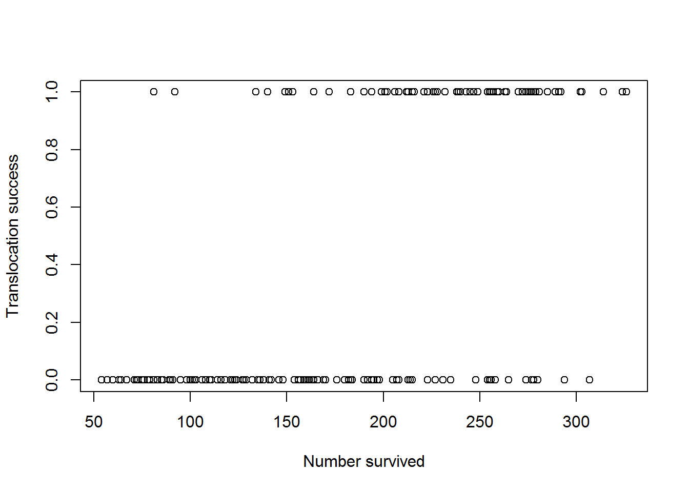 Well that was not very helpful. But it does show that we do not have to deal with complete separation issues. I know you are all probably thinking separation issues only occur when you are away from your computer for too long, but in this case if there is no overlap between the 0s and 1s with the covariate we will not be able to fit the model.
Let’s try to look at each habitat on a plot. We can use the subset argument in the plot function to look at each habitat. To keep them all straight I am going to add a title to them.
plot(success~n_survived,data=dat,
xlab="Number survived",
ylab="Translocation success",
subset=habitat=="forest",
main="Forest")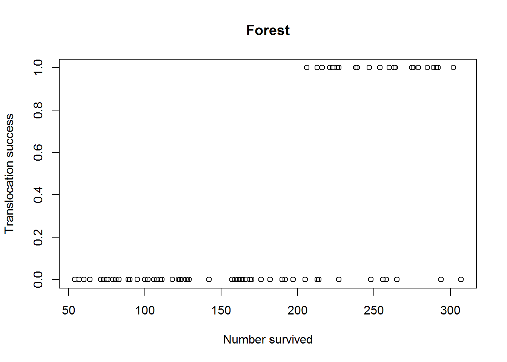 Now lets look at field habitat.
plot(success~n_survived,data=dat,
xlab="Number survived",
ylab="Translocation success",
subset=habitat=="field",
main="Field")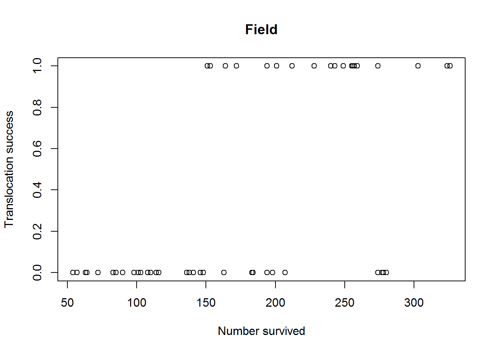 And finally we can look at swamp.
plot(success~n_survived,data=dat,
xlab="Number survived",
ylab="Translocation success",
subset=habitat=="swamp",
main="Swamp")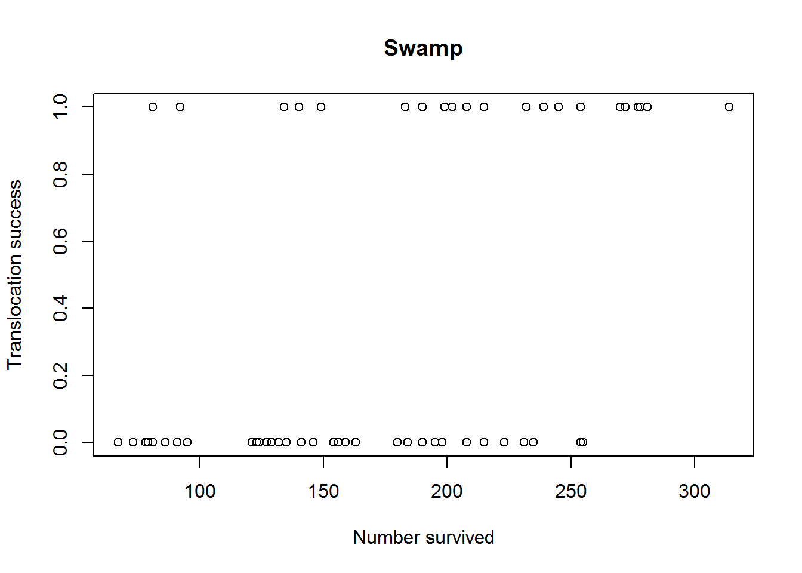
Let’s use our points function to overlay the different habitat types. First we make a blank plot using the argument type="n" and then overlay our varying habitats using the points() function.
plot(success~n_survived,data=dat,
xlab="Number survived",
ylab="Translocation success",
type="n")
points(success~n_survived,data=dat,
subset=habitat=="forest",
col="blue")
points(success~n_survived,data=dat,
subset=habitat=="field",
col="red")
points(success~n_survived,data=dat,
subset=habitat=="swamp",
col="green")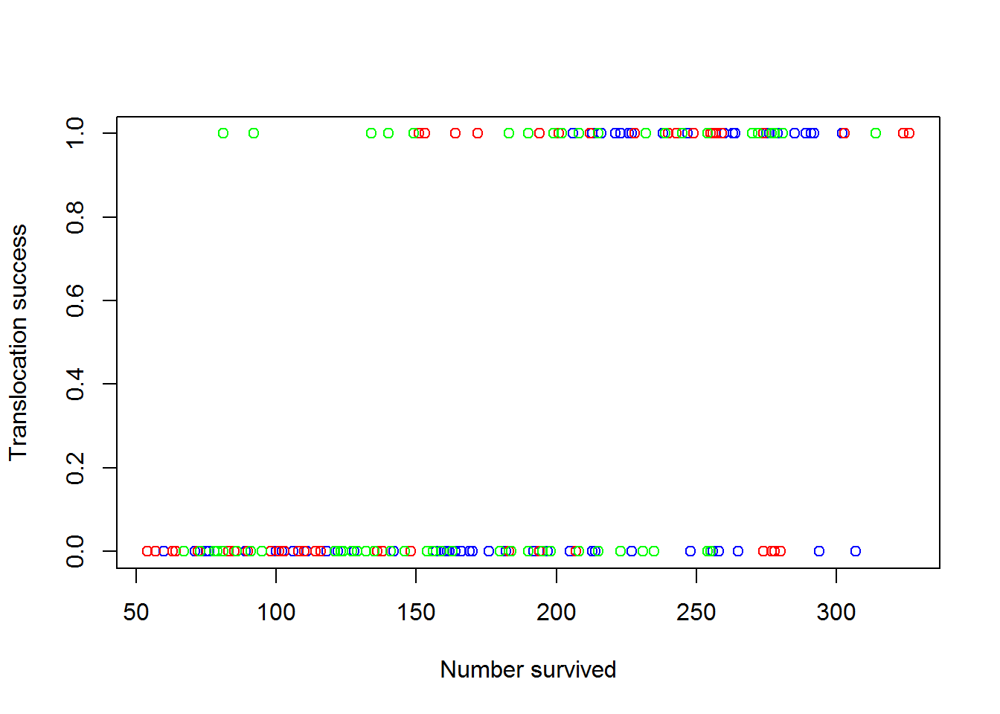
Well that is not super helpful either.
Can we plot multiple panels on the same plot? Yes, I am gladd you asked. We can use the par() function to tell R to plot several plots on the same plot area. Specifically, the mfrow argument will allow us to specify how many row and columns to plot. Let’s make each plot in 3 rows and 1 column.
par(mfrow=c(3,1))
plot(success~n_survived,data=dat,
xlab="Number survived",
ylab="Translocation success",
subset=habitat=="forest")
plot(success~n_survived,data=dat,
xlab="Number survived",
ylab="Translocation success",
subset=habitat=="field")
plot(success~n_survived,data=dat,
xlab="Number survived",
ylab="Translocation success",
subset=habitat=="swamp") 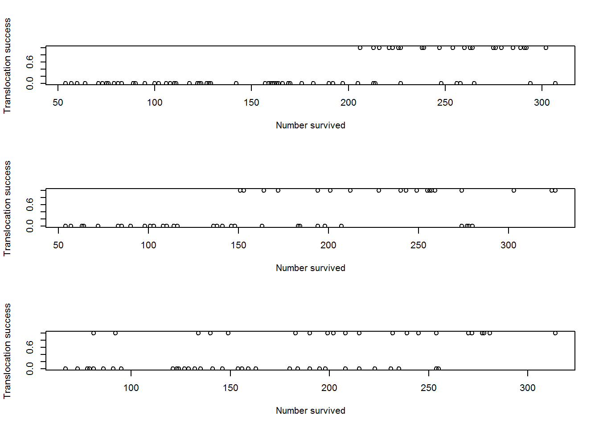
Well we can start to see some patterns here. Forest looks to be only successful if there are lots of critters translocated. swampy areas have success over a wide range of numbers stocked.
Those plots are hard to read though. With some tweaking we can adjust things to make them a bit more pleasant. First thing we need to adjust is the margins around each plot using the mar argument
par(mfrow=c(3,1),mar=c(1,1,1,1))
plot(success~n_survived,data=dat,
xlab="Number survived",
ylab="Translocation success",
subset=habitat=="forest")
plot(success~n_survived,data=dat,
xlab="Number survived",
ylab="Translocation success",
subset=habitat=="field")
plot(success~n_survived,data=dat,
xlab="Number survived",
ylab="Translocation success",
subset=habitat=="swamp") 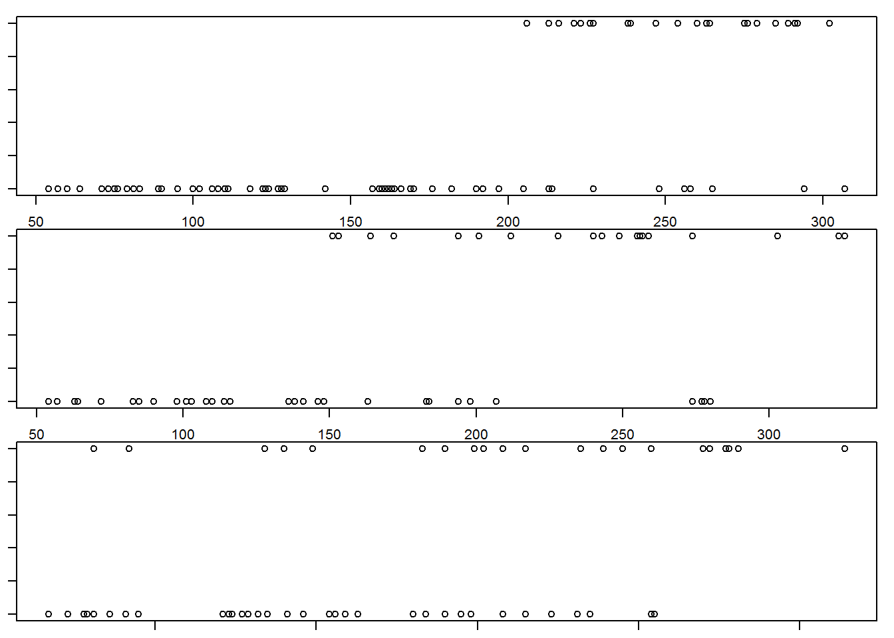
Well that is better, but I lost my labels. What do the 4 numbers mean anyways? Well they indicate the margin size starting at the bottom (x-axis) and move clockwise around so that 2 is the y-axis, 3 is the top, and 4 is the left margin. If was want to increase the bottom and right margins a bit we can change the first and second element in the mar argument.
par(mfrow=c(3,1),mar=c(6,6,1,1))
plot(success~n_survived,data=dat,
xlab="Number survived",
ylab="Translocation success",
subset=habitat=="forest")
plot(success~n_survived,data=dat,
xlab="Number survived",
ylab="Translocation success",
subset=habitat=="field")
plot(success~n_survived,data=dat,
xlab="Number survived",
ylab="Translocation success",
subset=habitat=="swamp") 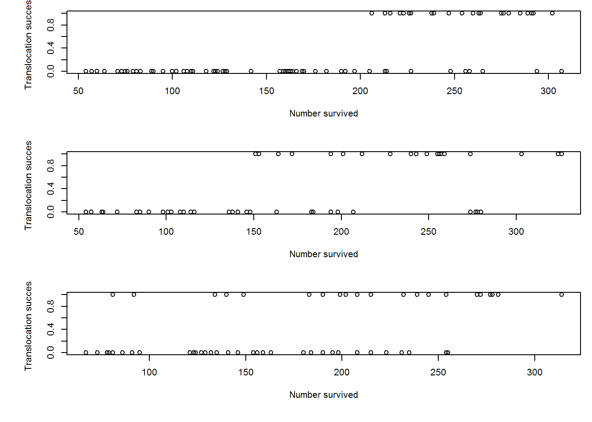
That is better, but my axis labels are gross and redundant. We can add a little bit of outer margin and add some text to that to make them not so gross using the oma argument. And we can then use the mtext() function to add some text in that new margin area.
par(mfrow=c(3,1),mar=c(1,1,1,1),oma=c(3,3,1,1))
plot(success~n_survived,data=dat,
xlab="",
ylab="",
subset=habitat=="forest")
plot(success~n_survived,data=dat,
xlab="",
ylab="",
subset=habitat=="field")
plot(success~n_survived,data=dat,
xlab="",
ylab="",
subset=habitat=="swamp")
mtext(text="Number survived",
side=1,# plot on the bottom outer margin
line=1,# what line to plot on
outer=TRUE) # plot in the outer margin
mtext(text="Translocation success",
side=2, # plot on the left outer margin
line=1, # what line to plot on
outer=TRUE) # plot in the outer margin
With tweaking you can get some really good graphics. Let’s move on to the model.
model
Here we are going to fit a model to the 0s and 1s, success in the dataset. Specifically we are going to fit the predictive model
\[\text{logit}(p) = \beta_0 + \beta_1\cdot \text{Survivors} + \beta_2\cdot\text{Truck} + \beta_3\cdot\text{Habitat}\]
where
- \(\beta_{0}\) is the model intercept,
- \(\beta_{1}\) is the effect of the number of critters translocated
- \(\beta_{2}\) is the effect of truck indicating a delayed mortality
- \(\beta_{3}\) is the effect of habitat the critter was stocked into
The link the prediction to data using a statistical model to account for uncertainty as:
\[Y_i \sim Bernoulli(p)\]
where
- \(Y_i\) is the observed values
- \(p\) is the probability of translocation success (i.e., 1)
fitting
We fit that model as before using theglm() function.
fit<- glm(success~n_survived+truck+habitat,
data=dat,
family="binomial")In this case we did not have to use the cbind() function to bind the successes and failures together, the function interpreted the 0s as failures and the 1s as successes for us. We can do all the cool things as before like using summary(), coef(), and so on.
summary(fit)##
## Call:
## glm(formula = success ~ n_survived + truck + habitat, family = "binomial",
## data = dat)
##
## Deviance Residuals:
## Min 1Q Median 3Q Max
## -2.3522 -0.6624 -0.2215 0.6603 2.2767
##
## Coefficients:
## Estimate Std. Error z value Pr(>|z|)
## (Intercept) -4.918664 0.848517 -5.797 6.76e-09 ***
## n_survived 0.027509 0.004073 6.754 1.43e-11 ***
## trucktruck 2 -1.465170 0.420154 -3.487 0.000488 ***
## habitatforest -0.884348 0.504305 -1.754 0.079499 .
## habitatswamp 0.176692 0.504056 0.351 0.725933
## ---
## Signif. codes: 0 '***' 0.001 '**' 0.01 '*' 0.05 '.' 0.1 ' ' 1
##
## (Dispersion parameter for binomial family taken to be 1)
##
## Null deviance: 258.98 on 199 degrees of freedom
## Residual deviance: 161.15 on 195 degrees of freedom
## AIC: 171.15
##
## Number of Fisher Scoring iterations: 5We have a nice summary of the effects and the estimates of the \(\beta\)s. We can extract those.
betas<- coef(fit)The summary provides p-values, which are nice, but some analysis prefer confidence intervals of the parameter estimates. We can calculate those using the confint() function.
confint(fit)## Waiting for profiling to be done...## 2.5 % 97.5 %
## (Intercept) -6.72100358 -3.37363619
## n_survived 0.02016248 0.03623853
## trucktruck 2 -2.32470553 -0.66777609
## habitatforest -1.90139203 0.08820573
## habitatswamp -0.81033150 1.17722193This approach profiles the likelihood, see Hilborn and Mangel’s Ecological Detective if you are interested in this. Regardless we can see most estimates are reasonably precise and do not overlap 0. Habitat is a bit suspect, but we are going to roll with it.
We can get things like residuals and fitted values.
dat$residuals<- resid(fit)
dat$fitted<- fitted(fit)And now we can look at them.
plot(residuals~fitted,
data=dat)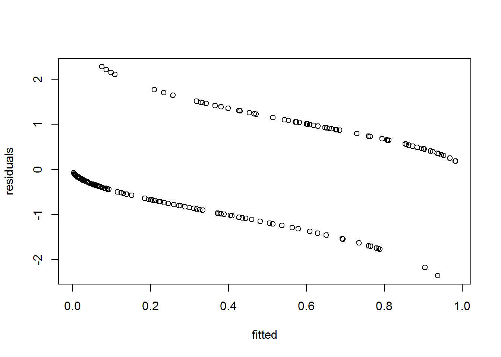 Well that is weird, but it illustrates there only 2 outcomes, 0 or 1. The plot of predicted to observed is equally weird and not really any use.
plot(success~fitted,
data=dat)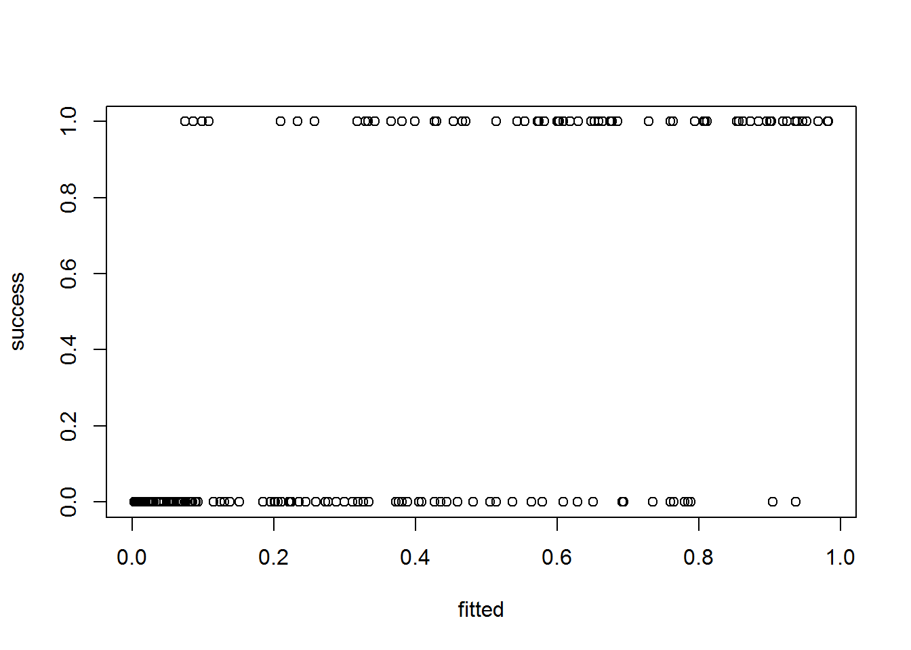 The take home here is that it is difficult to evaluate binary outcomes, but you can look at things like receiver operator curves to see if the model does better than chance and other goodness of fit measures..
Predictions
We can make predictions just as we did before using the predict() function. First we need to make a dataset to predict from. The expand.grid() function worked well before to get all possible combinations, let’s use that again.
preddat<- expand.grid(
truck=c("truck 1", "truck 2"),
n_survived=c(min(dat$n_survived):max(dat$n_survived)),
habitat=c("forest","field","swamp"))
head(preddat)## truck n_survived habitat
## 1 truck 1 54 forest
## 2 truck 2 54 forest
## 3 truck 1 55 forest
## 4 truck 2 55 forest
## 5 truck 1 56 forest
## 6 truck 2 56 forestAnd then feed the new data to the predict() function.
preddat$pred<- predict(fit, newdata=preddat,
type="response")# get probabilities, not log oddsTo help visualize what is going on we can plot the prediction.
plot(pred~n_survived,preddat,type="n",
xlab="Number surviving",
ylab="Probability of success",
las=1)
points(pred~n_survived,preddat,
subset=truck=="truck 1" & habitat =="forest",
lty=1,type="l")
points(pred~n_survived,preddat,
subset=truck=="truck 2" & habitat =="forest",
lty=2,type="l")
points(pred~n_survived,preddat,
subset=truck=="truck 1" & habitat =="field",
lty=1,col="darkgrey",type="l")
points(pred~n_survived,preddat,
subset=truck=="truck 2" & habitat =="field",
lty=2,col="darkgrey",type="l")
points(pred~n_survived,preddat,
subset=truck=="truck 1" & habitat =="swamp",
lty=1,col="lightgrey",type="l")
points(pred~n_survived,preddat,
subset=truck=="truck 2" & habitat =="swamp",
lty=2,col="lightgrey",type="l")
# PUT A LEGEND ON THIS AND CALL IT A NIGHT!
legend("topleft",c("Forest Truck 1","Forest Truck 2",
"Field Truck 1","Field Truck 2",
"Swamp Truck 1","Swamp Truck 2"),
col=c("black","black",
"darkgrey","darkgrey",
"lightgrey","lightgrey"),lty=c(1,2))
One nice thing about the binomial is that we can directly interpret the outcomes.
preddat[preddat$n_survived==200,]## truck n_survived habitat pred
## 293 truck 1 200 forest 0.4252848
## 294 truck 2 200 forest 0.1460049
## 839 truck 1 200 field 0.6418108
## 840 truck 2 200 field 0.2927764
## 1385 truck 1 200 swamp 0.6813373
## 1386 truck 2 200 swamp 0.3306503Looks like the effect of truck 2 is pretty significant. We can also add our new model to our existing decision network, like the figure below.
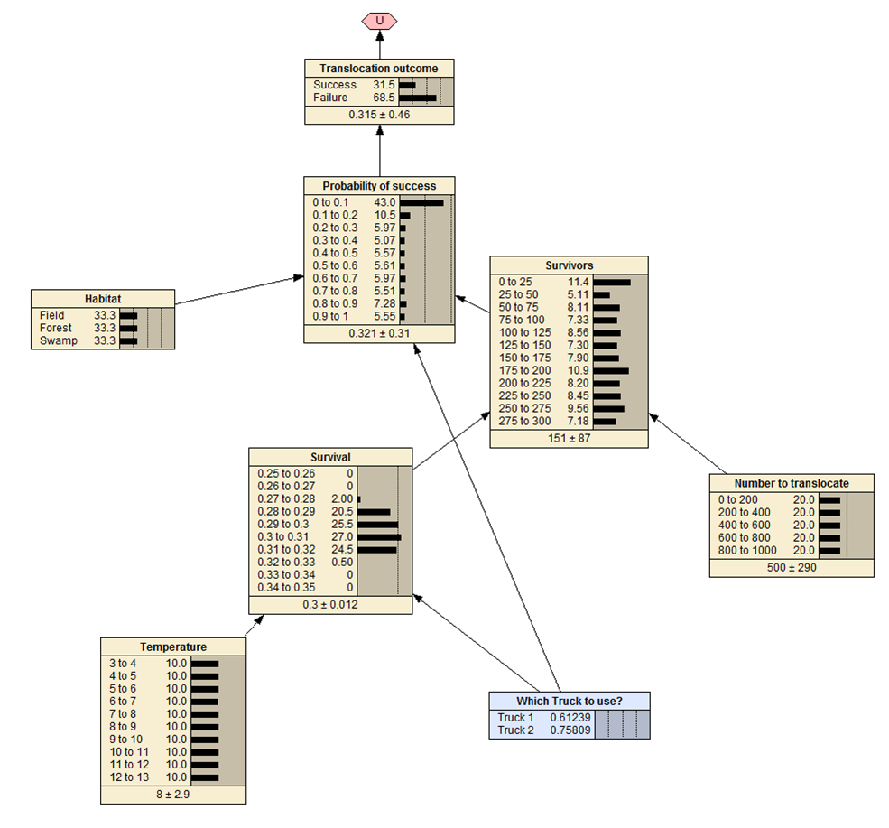